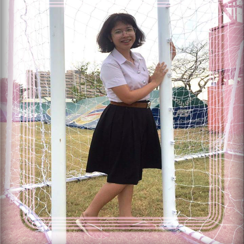

ชื่อ : นางสาวกมลชนก โฉมยงค์
ชื่อเล่น : เฟิร์น
อายุ : 21 ปี
ระดับการศึกษา : ปริญญาตรีปีที่ 3
ภาควิชา : คอมพิวเตอร์
สาขา : ครุศาสตร์วิศวกรรม
คณะ : ครุศาสตร์อุตสาหกรรม
สถานศึกษา : สถาบันเทคโนโลยีพระจอมเกล้าเจ้าคุณทหารลาดกระบัง